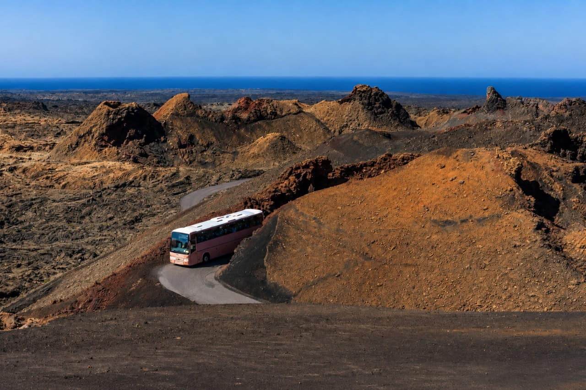

El Parque Nacional de Timanfaya es un espacio natural protegido situado en los municipios de Yaiza y Tinajo, en la isla de Lanzarote. Se originó a raíz de las erupciones volcánicas sucedidas entre 1730 y 1736, y posteriormente en 1824, lo que transformó por completo la geografía de la zona.
Es un paisaje de apariencia casi lunar, compuesto por campos de lavas, piroclastos y conos volcánicos. Actualmente cuenta con anomalías geotérmicas en la superficie, donde la temperatura alcanza valores muy elevados a pocos metros de profundidad.
Me gusta este lugar porque ofrece un paisaje único e imponente que no se encuentra fácilmente en otras partes del mundo. La combinación de tonos rojizos, negros y ocres con el azul del cielo impresiona desde el primer momento en que llegas.
Además, ver en directo las demostraciones geotérmicas, como los géiseres de vapor de agua y los matorrales ardiendo al contacto con el calor del suelo, me parece una experiencia impresionante que demuestra la fuerza de la naturaleza que aún late bajo la isla.

Más información en la web oficial del Ministerio
Consulta la tabla de datos prácticos (horarios, precios y acceso)